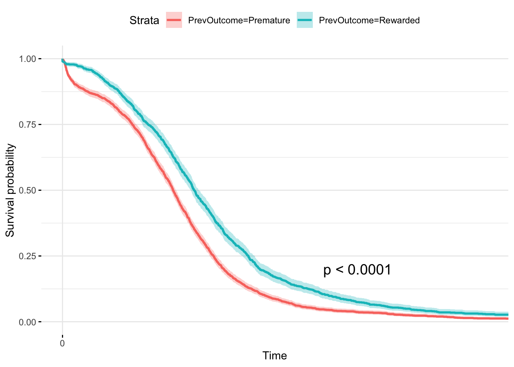
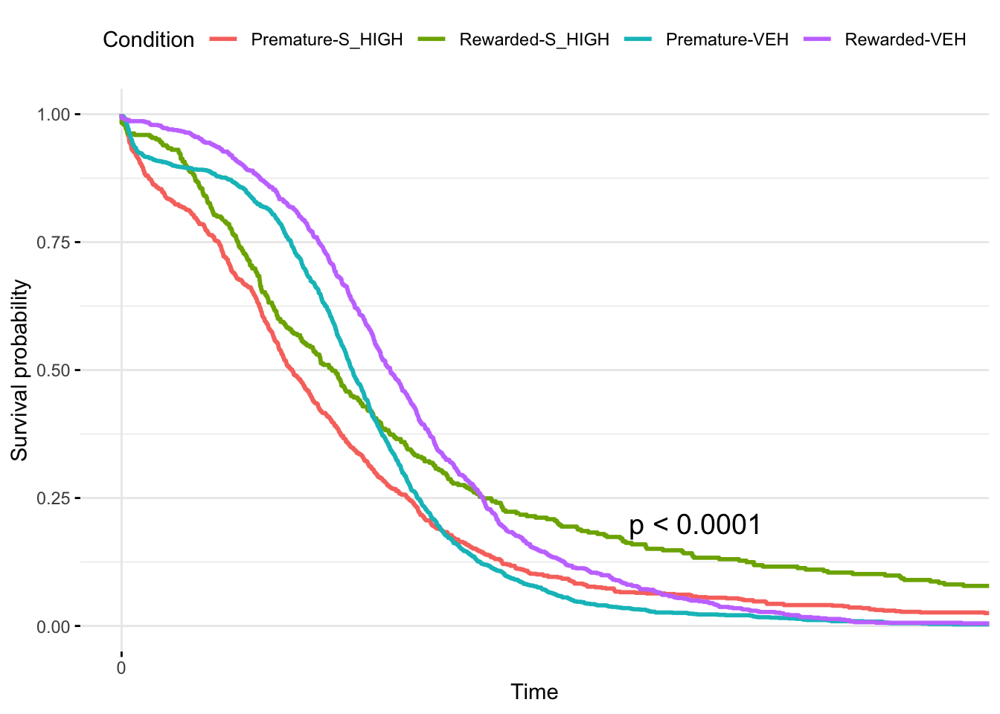
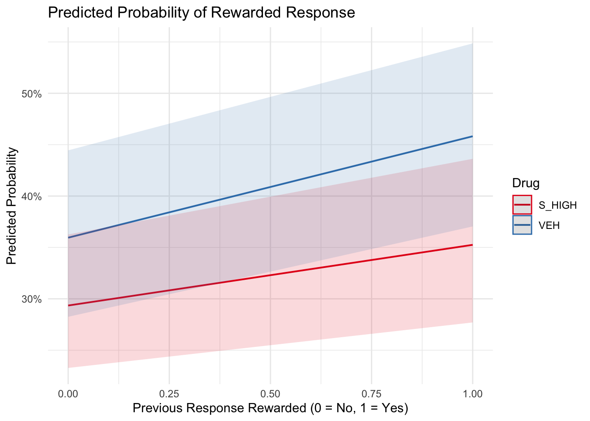

This project contintue to analyze my FYP data by examine how the likelihood of a rat’s lever press depends on its previous press using survival analysis and logistic regression. Specifically, it examines whether drug treatments influence the rats’ tendency to wait longer or respond prematurely following a previous rewarded or premature response.
library(tidyverse)## ── Attaching core tidyverse packages ──────────────────────── tidyverse 2.0.0 ──
## ✔ dplyr 1.1.4 ✔ readr 2.1.5
## ✔ forcats 1.0.0 ✔ stringr 1.5.1
## ✔ ggplot2 3.5.2 ✔ tibble 3.2.1
## ✔ lubridate 1.9.4 ✔ tidyr 1.3.1
## ✔ purrr 1.0.4
## ── Conflicts ────────────────────────────────────────── tidyverse_conflicts() ──
## ✖ dplyr::filter() masks stats::filter()
## ✖ dplyr::lag() masks stats::lag()
## ℹ Use the conflicted package (<http://conflicted.r-lib.org/>) to force all conflicts to become errorslibrary(survival)
library(survminer)## Loading required package: ggpubr
##
## Attaching package: 'survminer'
##
## The following object is masked from 'package:survival':
##
## myelomalibrary(lme4)## Loading required package: Matrix
##
## Attaching package: 'Matrix'
##
## The following objects are masked from 'package:tidyr':
##
## expand, pack, unpacklibrary(ggeffects)
IM_Carray_all_clean <- readRDS("~/Desktop/WFU/25Spring/R/portfolio.pdf/data/fyp/IM_Carray_all_clean.rds")Carray is a compound variable where each event time in the box is saved with an event code: .1 = Right lever press .2 = Left Lever press .3 = Nosepoke .4 = FREE PELLET .5 = EARNED PELLET The number BEFORE the decimal is a time stamp. The two rightmost numbers are .XY For example, 1800 would be 18.00 seconds.
# We need to filter out all rows that are not lever presses!
IM_Carray_all_clean <- IM_Carray_all_clean %>%
filter(Event == 1)
#IM_Carray_all_clean <- IM_Carray_all_clean %>%
# filter(!(Event %in% c(2, 4)))#calculate the inter-response time
IM_Carray_all_clean <- IM_Carray_all_clean %>%
group_by(Subject, Day) %>%
mutate(Interval = c(0, diff(Time))) %>%
ungroup()
# get outcome from Interval
IM_Carray_all_clean <- IM_Carray_all_clean %>%
arrange(Subject, Drug) %>%
group_by(Subject) %>%
mutate(
Outcome = ifelse(Interval >= 20, "Rewarded", "Premature"),
PrevOutcome = lag(Outcome)
) %>%
ungroup()# Remove the first press for each rat (no previous press to measure survival time from)
surv_data <- IM_Carray_all_clean %>%
filter(!is.na(Interval) & !is.na(PrevOutcome)) %>%
filter(Drug %in% c("VEH", "S_HIGH"))
# Create a Surv object: Interval as survival time, all "events" are press (so status = 1)
surv_obj <- Surv(time = surv_data$Interval, event = rep(1, nrow(surv_data)))
# Fit a Cox model using previous outcome as predictor
cox_model_simple <- coxph(surv_obj ~ PrevOutcome, data = surv_data)
summary(cox_model_simple)## Call:
## coxph(formula = surv_obj ~ PrevOutcome, data = surv_data)
##
## n= 3277, number of events= 3277
##
## coef exp(coef) se(coef) z Pr(>|z|)
## PrevOutcomeRewarded -0.33032 0.71869 0.03685 -8.964 <2e-16 ***
## ---
## Signif. codes: 0 '***' 0.001 '**' 0.01 '*' 0.05 '.' 0.1 ' ' 1
##
## exp(coef) exp(-coef) lower .95 upper .95
## PrevOutcomeRewarded 0.7187 1.391 0.6686 0.7725
##
## Concordance= 0.546 (se = 0.005 )
## Likelihood ratio test= 82.64 on 1 df, p=<2e-16
## Wald test = 80.36 on 1 df, p=<2e-16
## Score (logrank) test = 81.06 on 1 df, p=<2e-16cox_model_interact <- coxph(surv_obj ~ PrevOutcome * Drug, data = surv_data)
summary(cox_model_interact)## Call:
## coxph(formula = surv_obj ~ PrevOutcome * Drug, data = surv_data)
##
## n= 3277, number of events= 3277
##
## coef exp(coef) se(coef) z Pr(>|z|)
## PrevOutcomeRewarded -0.39919 0.67086 0.06453 -6.186 6.17e-10 ***
## DrugVEH -0.07058 0.93185 0.04515 -1.563 0.118
## PrevOutcomeRewarded:DrugVEH 0.10753 1.11352 0.07850 1.370 0.171
## ---
## Signif. codes: 0 '***' 0.001 '**' 0.01 '*' 0.05 '.' 0.1 ' ' 1
##
## exp(coef) exp(-coef) lower .95 upper .95
## PrevOutcomeRewarded 0.6709 1.4906 0.5912 0.7613
## DrugVEH 0.9318 1.0731 0.8529 1.0181
## PrevOutcomeRewarded:DrugVEH 1.1135 0.8981 0.9547 1.2987
##
## Concordance= 0.562 (se = 0.006 )
## Likelihood ratio test= 85.45 on 3 df, p=<2e-16
## Wald test = 83.44 on 3 df, p=<2e-16
## Score (logrank) test = 84.22 on 3 df, p=<2e-16# Compare models
anova(cox_model_simple, cox_model_interact)## Analysis of Deviance Table
## Cox model: response is surv_obj
## Model 1: ~ PrevOutcome
## Model 2: ~ PrevOutcome * Drug
## loglik Chisq Df Pr(>|Chi|)
## 1 -23213
## 2 -23212 2.8076 2 0.2457Both the main effect of Drug and the comparison of models are not significant, indicating that although the hazard ratio decreased followed by a rewarded response, the effect does not differ by drugs. Interestingly, this is not consistent with the condition probability results I got in portfolio piece 9. I’m not sure if it’s because of the model used or that here we using a continuous DV and in PP9 we analyzed a categorical DV.
ggsurvplot(survfit(surv_obj ~ PrevOutcome, data = surv_data),
pval = TRUE, conf.int = TRUE, xlim = c(0, 60),
ggtheme = theme_minimal())
ggsurvplot(survfit(surv_obj ~ interaction(PrevOutcome, Drug), data = surv_data),
pval = TRUE,
xlim = c(0, 60),
legend.title = "Condition",
legend.labs = c("Premature-S_HIGH", "Rewarded-S_HIGH", "Premature-VEH", "Rewarded-VEH"),
ggtheme = theme_minimal())
These plots clearly show that when rats were rewarded in the previous response, they are more likely to wait longer for the next response.
# Binary code the outcome: 1 = Rewarded, 0 = Premature
glm_data <- IM_Carray_all_clean %>%
mutate(
Rewarded = ifelse(Outcome == "Rewarded", 1, 0),
PrevRewarded = ifelse(PrevOutcome == "Rewarded", 1,
ifelse(PrevOutcome == "Premature", 0, NA))
) %>%
filter(Drug %in% c("VEH", "S_HIGH"))
# random intercept model with PrevRewarded as a predictor
glmm_model <- glmer(Rewarded ~ PrevRewarded + (1 | Subject), data = glm_data, family = "binomial")
summary(glmm_model)## Generalized linear mixed model fit by maximum likelihood (Laplace
## Approximation) [glmerMod]
## Family: binomial ( logit )
## Formula: Rewarded ~ PrevRewarded + (1 | Subject)
## Data: glm_data
##
## AIC BIC logLik deviance df.resid
## 4096.8 4115.0 -2045.4 4090.8 3274
##
## Scaled residuals:
## Min 1Q Median 3Q Max
## -1.3849 -0.7345 -0.5829 1.0531 1.8306
##
## Random effects:
## Groups Name Variance Std.Dev.
## Subject (Intercept) 0.1796 0.4237
## Number of obs: 3277, groups: Subject, 11
##
## Fixed effects:
## Estimate Std. Error z value Pr(>|z|)
## (Intercept) -0.72891 0.13703 -5.319 1.04e-07 ***
## PrevRewarded 0.46243 0.07898 5.855 4.77e-09 ***
## ---
## Signif. codes: 0 '***' 0.001 '**' 0.01 '*' 0.05 '.' 0.1 ' ' 1
##
## Correlation of Fixed Effects:
## (Intr)
## PrevRewardd -0.228# random slope model with PrevRewarded & Drug as predictors
glmm_model <- glmer(
Rewarded ~ PrevRewarded * Drug + (Drug | Subject),
data = glm_data,
family = binomial
)
summary(glmm_model)## Generalized linear mixed model fit by maximum likelihood (Laplace
## Approximation) [glmerMod]
## Family: binomial ( logit )
## Formula: Rewarded ~ PrevRewarded * Drug + (Drug | Subject)
## Data: glm_data
##
## AIC BIC logLik deviance df.resid
## 4053.9 4096.6 -2020.0 4039.9 3270
##
## Scaled residuals:
## Min 1Q Median 3Q Max
## -1.7624 -0.7050 -0.5514 1.0469 2.2763
##
## Random effects:
## Groups Name Variance Std.Dev. Corr
## Subject (Intercept) 0.1944 0.4409
## DrugVEH 0.2917 0.5401 -0.36
## Number of obs: 3277, groups: Subject, 11
##
## Fixed effects:
## Estimate Std. Error z value Pr(>|z|)
## (Intercept) -0.8785 0.1612 -5.451 5.02e-08 ***
## PrevRewarded 0.2707 0.1436 1.886 0.0593 .
## DrugVEH 0.3010 0.1970 1.528 0.1266
## PrevRewarded:DrugVEH 0.1393 0.1738 0.801 0.4230
## ---
## Signif. codes: 0 '***' 0.001 '**' 0.01 '*' 0.05 '.' 0.1 ' ' 1
##
## Correlation of Fixed Effects:
## (Intr) PrvRwr DrgVEH
## PrevRewardd -0.309
## DrugVEH -0.504 0.253
## PrvRwr:DVEH 0.255 -0.826 -0.327From the random slope model predicting rats’ lever press success from the previous lever press, we can see that previous lever press has a marginally significant effect on rats’ next lever presses, but drug doesn’t significantly influence this effect.
pred <- ggpredict(glmm_model, terms = c("PrevRewarded", "Drug"))## You are calculating adjusted predictions on the population-level (i.e.
## `type = "fixed"`) for a *generalized* linear mixed model.
## This may produce biased estimates due to Jensen's inequality. Consider
## setting `bias_correction = TRUE` to correct for this bias.
## See also the documentation of the `bias_correction` argument.plot(pred) +
labs(
title = "Predicted Probability of Rewarded Response",
x = "Previous Response Rewarded (0 = No, 1 = Yes)",
y = "Predicted Probability",
color = "Drug"
) +
theme_minimal()
Finally, it’s interesting to see how different models/methods provide converging/different results.